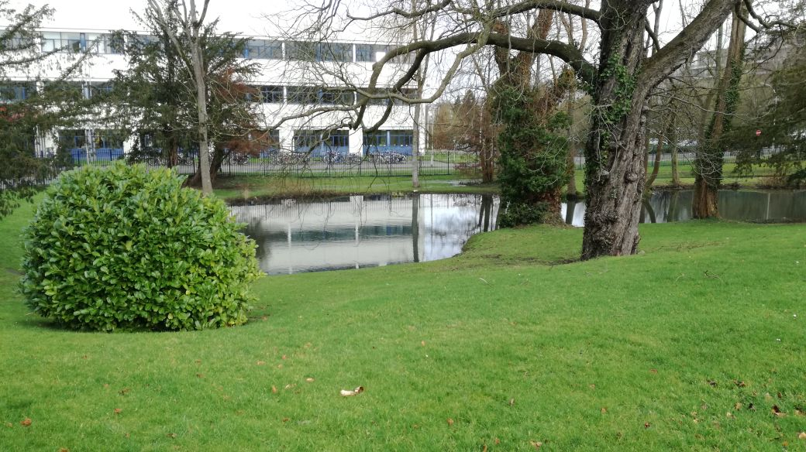

Vorkenntnisse, Hoffnungen ,Befürchtungen
Während der Zeit hab ich gelernt mit Excel, Bildbearbeitung, Verschlüsselung, Website und Java und vieles mehr umzugehen. Ich denke Persönlich das ich in Textverarbeitung und Präsentationen gute Kenntnisse habe, Tabellenkalkulation Grundkenntnisse und HTML kann ich auch relativ gut. Vor allem das Programmieren von Webseiten und das direkte sehen warum ich etwas gemacht habe und wie es aussieht hat mir schon immer große Freude bereitet.
Ich erwarte von meinem Praktikum, dass ich freundlich aufgenommen werde und dass ich nette Arbeitskollegen habe, das meine Mitarbeiter hilfsbereit sind. Dass man in diesem Praktikum mehr Erfahrungen bekommt und man auch weiß, ob dieser Beruf etwas für mich ist.. Ich erwarte, dass ich im späteren Beruf das, was ich im Praktikum gelernt habe, auch nutzen kann. Ich hatte sehr positive Erwartungen z.B. dass ich gut behandelt werde.
Meine Befürchtungen sind das etwas schlimmes passiert oder das etwas schiefgehen kann. Was ich aber nicht erleben will ,dass man mich einfach irgendwo hin bringt und das ich da alleine sitze und einfach irgendwas am Computer mache und nichts beigebracht bekomme. Außerdem will ich nicht das ich ihnen egal bin.